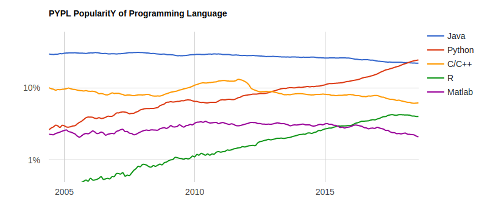
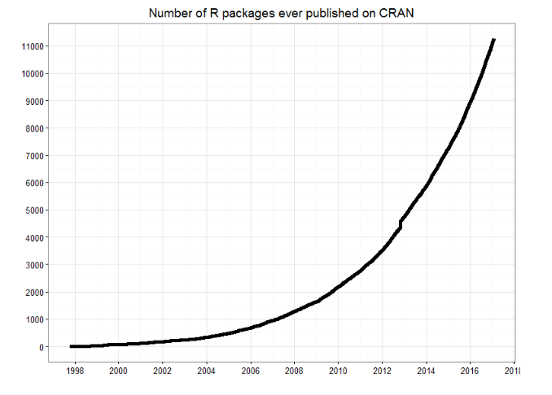
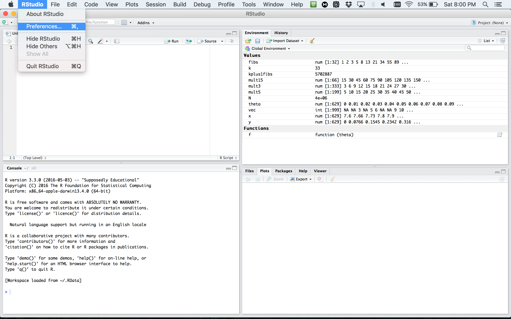
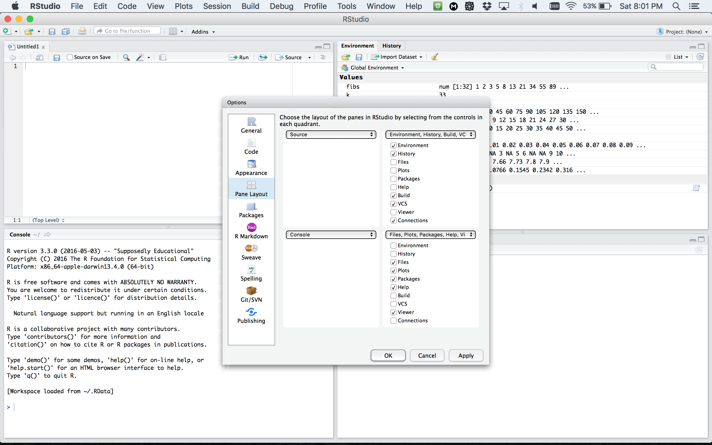
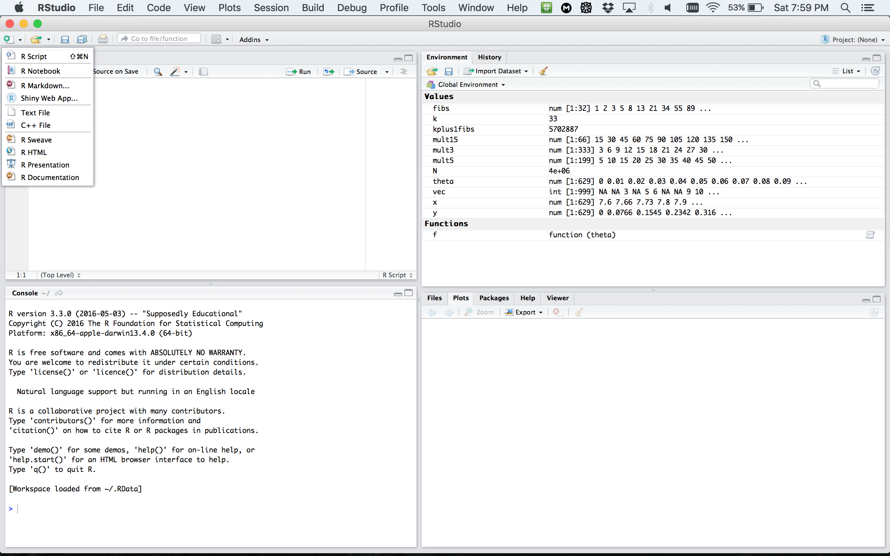

Introduction to R
Week 1 Session 1
Claire Donnat (cdonnat[at]stanford.edu)
based on the material by Lan Huong Nguyen
June 29th, 2020
Contents
Course Objectives & Organization
The R language
Setting up R environment
Basics of coding in R
Course Objectives & Organization
Course Logistics
The bootcamp will run for 8 weeks: 06/29-08/23/2020
- Lectures: Monday, Wednesday, Thursday 10:00 AM - 11:00 AM
- Office hours: Mon 2 - 3 PM, Tue 3 - 4 PM, Wed 3 - 4 PM, and Thu 4 - 5 PM (Others by appointment)
- Class website: https://biox-rbootcamp.github.io/
- Questions/Communication: cdonnat[at]stanford.edu / jameszli[at]stanford.edu
No Grading but:
- 15 h of work per week
- Flipped classroom format: Labs and videos should be watched and done before the discussion
- Zoom classes are reserved for discussion
- James will also hold office hours several times a week to provide more one-to-one support.
Assignements: Labs
Assignements — i.e the labs that you should work on before each discussion:
- work individually (best for you).
- actively participate in discussion sessions.
Pre-requisites and expectations
No formal pre-requisites, knowledge of statistics nor programming experience.
The goal of this course is for you to:
- familiarize yourself with R
- learn how to do interesting and practical things quickly in R
- start using R as a powerful tool for data science
We will NOT learn:
- computer programming
- statistics
- big data
This is a short course, so you will not learn everything about R.
Topics Covered
R Basics: data types and structures, variable assignment etc.
R as a programming language: syntax, flow control, iteration, functions.
Importing and tidying data.
Processing and transforming data with
dplyr.Visualizing data with
ggplot2.Exploratory data analysis (EDA)
Mixture Models
Clustering
Testing
Multivariate Analysis
Network & Trees
The R language
What is R?
R was created by Rob Gentleman and Ross Ihaka in 1994; it is based on the S language developed at Bell Labs by John Chambers (Stanford Statistics).
It is an open-source language and environment for statistical computing and graphics.

- R offers:
- A simple and effective programming language.
- A data handling and storage facility.
- A suite of libraries for matrix computations.
- A large collection of tools for data analysis.
- Facilities for generating high-quality graphics and data display.
- R is highly extensible, but remains a fully planned and coherent system, rather than an incremental accumulation of specific and inflexible tools.
Who uses R?
Traditionally, academics and researchers. However, recently R has expanded also to industry and enterprise market. Worldwide usage on log-scale:

Source: http://pypl.github.io/PYPL.html
The PYPL Index is created by analyzing how often language tutorials are searched on Google (generated using raw data from Google Trends).
Why should you learn R?
Pros:
- Open source and cross-platform.
- Created with statistics and data in mind; new ideas and methods in statistics usually appear in R first.
- Provides a wide range of high-quality packages for data analysis and visualization.
- Arguably, the most commonly used language by data scientists
Cons:
- Performance/Scalability: low speed, poor memory management.
- Some packages are low-quality and provide no support.
- A unconventional syntax and a few unusual features compared to other languages.
A few alternatives to R:
- Python: fastest growing, general-purpose programming, with data science libraries.
- SAS: used for statistical analysis; commercial and expensive, slower development.
- SQL: designed for managing data held in a relational database management system.
- MATLAB: proprietary, mostly for numerical computing, and matrix computations.
What makes R good?
R is an interpreted language, i.e. programs do not need to be compiled into machine-language instructions.
R is object oriented, i.e. it can be extended to include non-standard data structures (objects). A generic function can act differently depending on what objects you passe to it.
R supports matrix arithmetics.
R packages can generate publication-quality plots, and interactive graphics.
Many user-created R packages contain implementations of cutting edge statistics methods.
What makes R good?
As of September 29, there are 13,083 packages on CRAN, 1,560 on Bioconductor, and many others on github)

“Textbook”
We will use R for Data Science as a primary reference. Other resources are listed on the website/

Other useful resources for learning R
R in a nutshell and introductory book by Joseph Adler - R tutorial (https://www.tutorialspoint.com/r/r_packages.htm)
Advanced R book by Hadley Wickham for intermediate programmers (http://adv-r.had.co.nz/Introduction.html)
swirlR-package for interactive learning for beginners (http://swirlstats.com/)Data Campcourses for data science, R, python and more (https://www.datacamp.com/courses)
Setting up an R environment
Installing R
R is open sources and cross platform (Linux, Mac, Windows).
To download it, go to the Comprehensive R Archive Network CRAN website. Download the latest version for your OS and follow the instructions.
Each year a new version of R is available, and 2-3 minor releases. You should update your software regularly.
Running R code
Interpreter mode:
open a terminal and launch R by calling “R” (or open an R console).
type R commands interactively in the command line, pressing
Enterto execute.use
q()to quit R.
Scripting mode:
write a text file containing all commands you want to run
save your script as an R script file (e.g. “myscript.R”)
execute your code from the terminal by calling “Rscript myscript.R”


R editors
The most popular R editors are:
- Rstudio, an integrated development environment (IDE) for R.
- Emacs, a free, powerful, customizable editor for many languages.
In this class, we will use RStudio, as it is more user-friendly.
Installing RStudio
RStudio is open-source and cross-platform (Linux, Mac, Windows).
Download and install the latest version for your OS from the official website.

RStudio window

RStudio preferences

RStudio layout

RStudio apprearance

More on RStudio cuztomization can be found here
R document types

R document types
R Script a text file containing R commands stored together.
R Markdown files can generate high quality reports contatining notes, code and code outputs. Python and bash code can also be executed.
R Notebook is an R Markdown document with chunks that can be executed independently and interactively, with output visible immediately beneath the input.
R presentation let’s you author slides that make use of R code and LaTeX equations as straightforward as possible.
R Sweave enables the embedding of R code within LaTeX documents.
Other documents
R packages
R packages are a collection of R functions, complied code and sample data.
They are stored under a directory called library in the R environment.
Some packages are installed by default during R installation and are always automatically loaded at the beginning of an R session.
- Additional packages by the user from:
- CRAN The first and biggest R repository.
- Bioconductor: Bioinformatics packages for the analysis of biological data.
- github: packages under development
Installing R packages from different repositories:
- From CRAN:
# install.packages("Package Name"), e.g.
install.packages("glmnet") - From Bioconductor:
# First, load Bioconductor script. You need to have an R version >=3.3.0.
source("https://bioconductor.org/biocLite.R")
# Then you can install packages with: biocLite("Package Name"), e.g.
biocLite("limma") - From github:
# You need to first install a package "devtools" from CRAN
install.packages("devtools")
# Load the "devtools" package
library(devtools)
# Then you can install a package from some user's reporsitory, e.g.
install_github("twitter/AnomalyDetection")
# or using install_git("url"), e.g.
install_git("https://github.com/twitter/AnomalyDetection") Where are R packages stored?
# Get library locations containing R packages
.libPaths()## [1] "/Library/Frameworks/R.framework/Versions/3.6/Resources/library"# Get the info on all the packages installed
installed.packages()[1:5, 1:3]## Package LibPath Version
## abind "abind" "/Library/Frameworks/R.framework/Versions/3.6/Resources/library" "1.4-5"
## ade4 "ade4" "/Library/Frameworks/R.framework/Versions/3.6/Resources/library" "1.7-15"
## animation "animation" "/Library/Frameworks/R.framework/Versions/3.6/Resources/library" "2.6"
## AnnotationDbi "AnnotationDbi" "/Library/Frameworks/R.framework/Versions/3.6/Resources/library" "1.48.0"
## AnnotationFilter "AnnotationFilter" "/Library/Frameworks/R.framework/Versions/3.6/Resources/library" "1.10.0"# Get all packages currently loaded in the R environment
search() ## [1] ".GlobalEnv" "package:stats" "package:graphics" "package:grDevices" "package:utils" "package:datasets" "package:methods" "Autoloads" "package:base"Getting you ready for Lab 2
The swirl R package allows to learn R programming and data science very easily. You will use it in Lab 2, so here we are going to install it together. The workflow is the same as for any other R package.
Step 1: Open RStudio and type the following into the console:
install.packages("swirl")That is just for this time!!! Once swirl is installed on your machine, you can skip directly to step 2.
Step 2: Start swirl
This is the only step that you will repeat every time you want to run swirl. First, you will load the package using the library() function. Then you will call the function that starts the magic! Type the following, pressing Enter after each line:
library("swirl")
swirl()Getting you ready for Lab 2
The first time you start swirl, you’ll be prompted to install a course. For Lab 2, we’ll ask you to go through a couple of recommended courses. See website for more information.